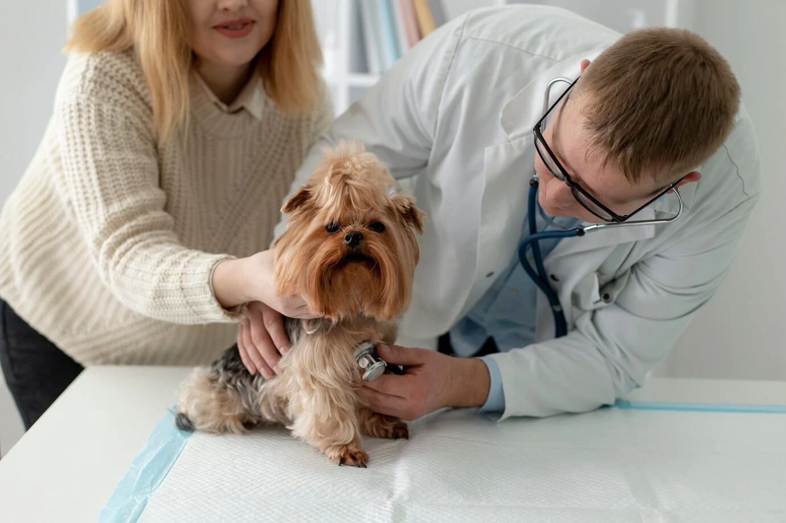
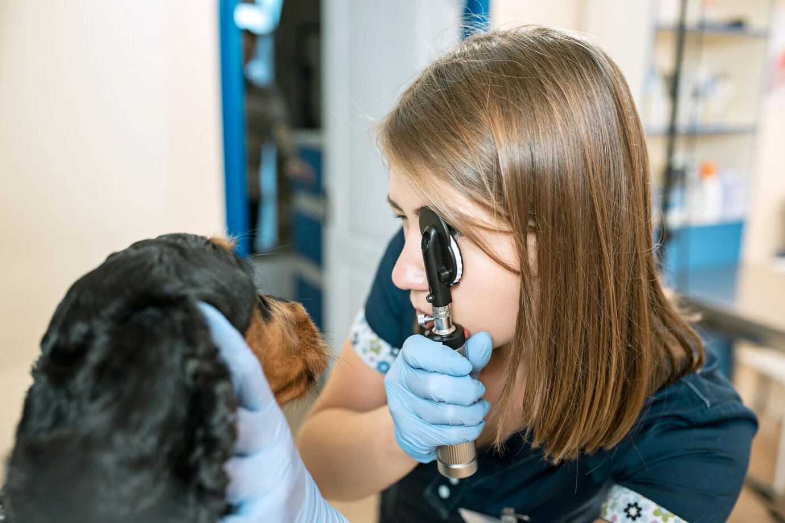
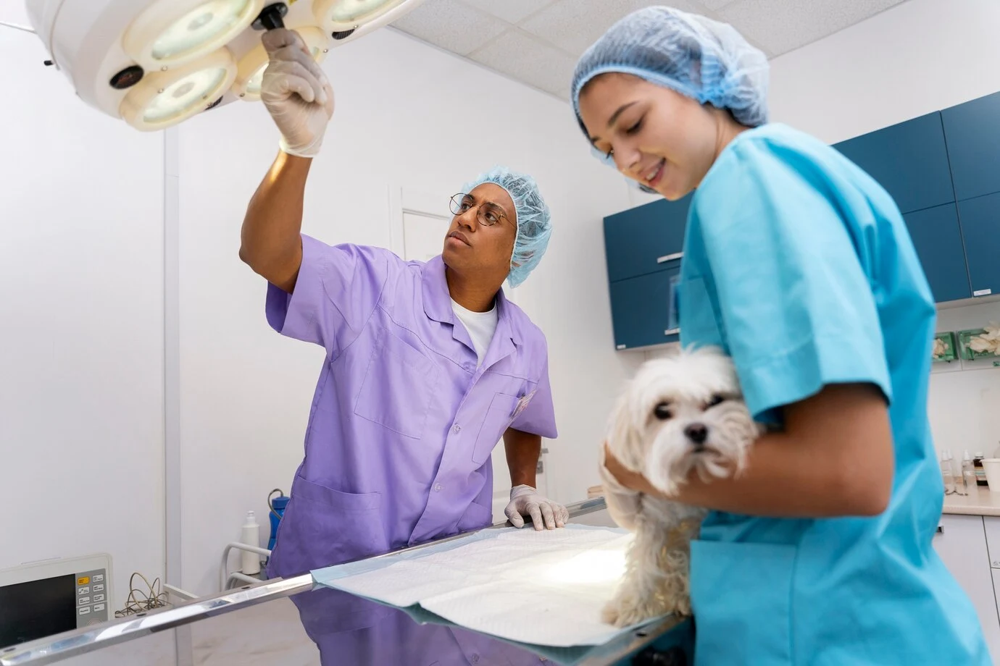
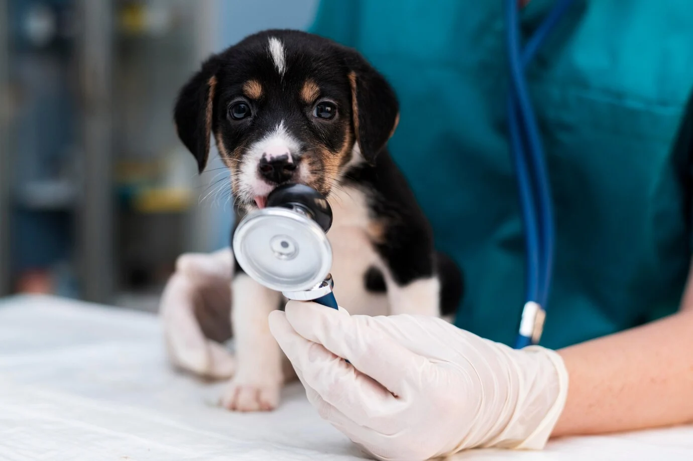

Consulta de Salud General
En nuestra consulta de salud general, realizamos un examen físico exhaustivo para evaluar el estado general de tu mascota. Desde el corazón y pulmones hasta la piel y pelaje, nuestro equipo de veterinarios se asegura de que cada parte del cuerpo esté en óptimas condiciones. Además, respondemos cualquier duda que puedas tener sobre la dieta, comportamiento y cuidado diario de tu mascota.
Saber más

Consulta Especializada
Si tu mascota tiene una condición específica que requiere atención especializada, nuestros veterinarios están capacitados para tratar problemas complejos. Ya sea que tu mascota presente síntomas inusuales o tenga una enfermedad crónica, trabajamos en conjunto contigo para desarrollar un plan de tratamiento personalizado que mejorará su calidad de vida.
Saber más
Vacunación de Cachorros y Gatitos
Los primeros meses de vida son cruciales para la salud futura de tu mascota. Ofrecemos un programa de vacunación completo para cachorros y gatitos, que incluye vacunas contra enfermedades como el moquillo, parvovirus, rabia y leucemia felina. Nuestro objetivo es asegurarnos de que tu nueva mascota tenga un comienzo saludable y protegido.
Saber más
Las vacunas no solo son esenciales en la etapa temprana, sino también a lo largo de la vida de tu mascota. Proporcionamos vacunaciones anuales para mantener la inmunidad contra enfermedades comunes. Esto incluye vacunas de refuerzo y actualizaciones según las necesidades individuales de tu mascota.
Saber más

Cirugía Electiva (Esterilización/Castración)
La esterilización y castración son procedimientos importantes que contribuyen al control de la población de mascotas y previenen problemas de salud a largo plazo. Realizamos estas cirugías con técnicas avanzadas y anestesia segura, minimizando el tiempo de recuperación para tu mascota.
Saber más
En situaciones críticas, cada minuto cuenta. Estamos preparados para realizar cirugías de emergencia que pueden salvar la vida de tu mascota. Desde intervenciones por traumas hasta cirugías para resolver obstrucciones, nuestro equipo actúa con rapidez y precisión para brindar el mejor resultado posible.
Saber más
Limpieza Dental Profesional
El cuidado dental es fundamental para la salud general de tu mascota. Ofrecemos limpiezas dentales profesionales que eliminan el sarro y la placa acumulada, previniendo enfermedades periodontales. Utilizamos anestesia segura para garantizar que el proceso sea cómodo para tu mascota.
Saber más
Tratamiento de Enfermedades Periodontales
Si tu mascota ya muestra signos de enfermedad periodontal, como mal aliento, encías inflamadas o pérdida de dientes, nuestro equipo ofrece tratamientos especializados. Esto incluye limpiezas profundas, extracciones y planes de manejo del dolor para asegurar una recuperación completa.
Saber más
Análisis de Sangre Completo
El análisis de sangre es una herramienta crucial para diagnosticar enfermedades ocultas en tu mascota. Realizamos hemogramas completos y perfiles bioquímicos que nos permiten evaluar la función de los órganos y detectar posibles problemas antes de que se conviertan en graves.
Saber más
El análisis de orina es esencial para detectar infecciones del tracto urinario, problemas renales y otros trastornos sistémicos. Ofrecemos pruebas precisas y rápidas que nos ayudan a identificar y tratar problemas de salud antes de que se agraven.
Saber más

Atención de Emergencias 24/7
Entendemos que las emergencias pueden ocurrir en cualquier momento. Ofrecemos atención de emergencias las 24 horas del día, los 7 días de la semana. Nuestro equipo está siempre listo para responder rápidamente y proporcionar los cuidados necesarios en situaciones críticas.
Saber más
Unidad de Cuidados Intensivos
Para mascotas que requieren monitoreo constante y tratamiento intensivo, contamos con una unidad de cuidados intensivos equipada con la tecnología más avanzada. Desde oxigenoterapia hasta control del dolor, proporcionamos el entorno óptimo para la recuperación de tu mascota.
Saber más